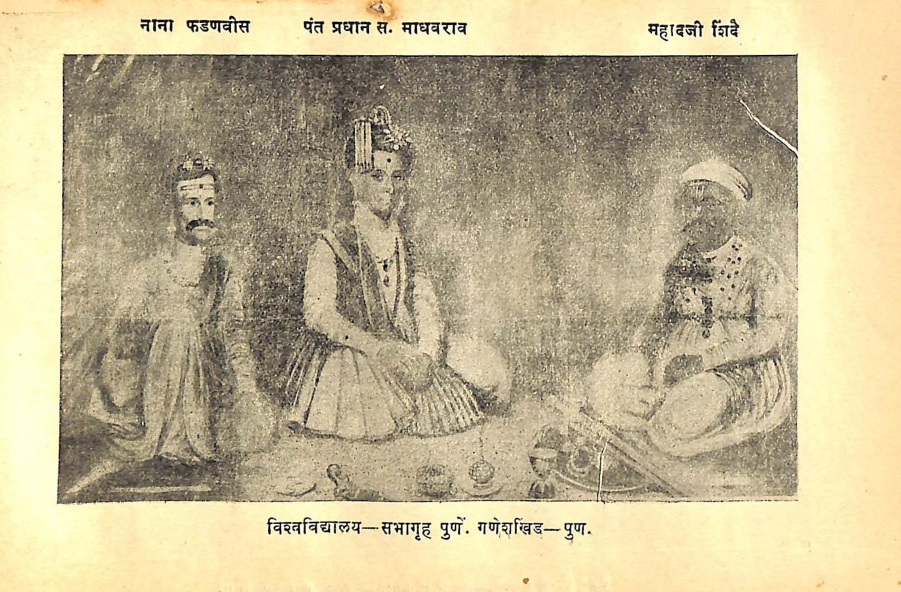
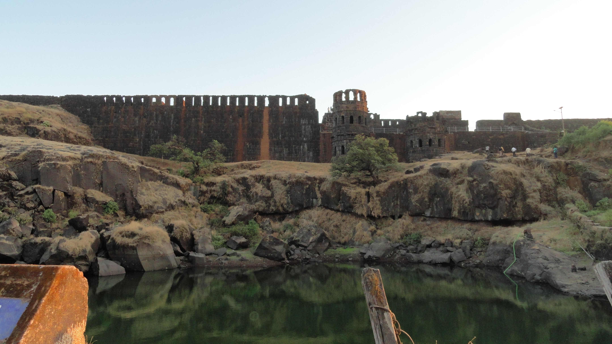

बखरी, समकालीन पत्रे, सनदा, गॅझेटिअर्स, ऐतिहासिक नकाशे, शोधप्रबंध आणि गावनिहाय मौखिक परंपरा — ५-स्तरीय संपादकीय प्रमाणीकरणासह एकाच ठिकाणी.
समकालीन पत्रे, शिलालेख, सनदा, जेधे शकावली, शासकीय अभिलेखागार.
विद्यापीठ प्रकाशने, पीअर-रिव्ह्यूड शोधप्रबंध, प्रमाणित इतिहासकार.
गॅझेटिअर्स (Gazetteers), संग्रहालये, भारत इतिहास संशोधक मंडळ (BISM).
प्रसिद्ध ग्रंथ, ऐतिहासिक पुस्तके, वर्तमानपत्र दस्तऐवज, संदर्भकोश.
गाव इतिहास, कुटुंब व घराणे नोंदी, पोवाडे (पडताळणी आवश्यक टॅगसह).
छत्रपती राजाराम महाराजांच्या आज्ञेवरून जिंजीच्या किल्ल्यावर लिहिलेली शिवछत्रपतींची सर्वांत जुनी व प्रमाण समकालीन बखर. शिवकालीन प्रशासन, किल्ले व युद्धांचे प्रत्यक्षदर्शी वर्णन.
छत्रपती संभाजी महाराजांनी वयाच्या अवघ्या १४-१५ व्या वर्षी संस्कृतमध्ये रचलेला अद्वितीय राजनीतिशास्त्र व प्रशासन ग्रंथ. तीन अध्यायांत राजधर्म, दुर्गरचना व सैन्यनीतीचे प्रगल्भ विवेचन.
स्वराज्याचे अमात्य रामचंद्रपंत यांनी छत्रपती संभाजी महाराज (दुसरे) यांच्या आज्ञेने लिहिलेला राज्यशास्त्रावरील प्रमाणग्रंथ. 'दुर्ग हेच राज्याचे मूळ' व आरमाराचे महत्त्व यात स्पष्ट केले आहे.
गावोगावी भटकून वि. का. राजवाडे यांनी शोधून काढलेली हजारो अस्सल शिवकालीन व पेशवेकालीन पत्रे, सनदा आणि दस्तऐवज. आधुनिक मराठा इतिहास संशोधनाचा पाया.
महाराष्ट्र शासनाने प्रकाशित केलेले अधिकृत ऐतिहासिक गॅझेटिअर्स — मराठा कालखंड, छत्रपती शिवाजी महाराज, छत्रपती संभाजी महाराज, पेशवे कालखंड व किल्ले यांवरील अधिकृत पुरावे.
शिवकालीन घटनांची तिथीवार अचूक नोंद असलेली शकावली. छत्रपती शिवाजी महाराजांचा जन्म, राज्याभिषेक, आग्र्याहून सुटका, व संभाजी महाराजांच्या काळातील तारखांचा सर्वांत विश्वसनीय पुरावा.

अटकेपासून कटकपर्यंत पसरलेल्या मराठा साम्राज्याची सीमा दर्शवणारा ऐतिहासिक नकाशा.

ब्रिटिश चित्रकार जेम्स वेल्सने रेखाटलेला सवाई माधवराव व नाना फडणवीस यांचा ऐतिहासिक दरबार.

छत्रपती शिवाजी महाराज वस्तुसंग्रहालय व केळकर संग्रहालयातील अस्सल शस्त्रदालन.

हिरोजी इंदुलकरांनी घडवलेली अजोड दुर्ग रचना, गंगासागर तलाव व महादरवाजा स्थापत्य.
गावोगावी असणाऱ्या जुन्या सनदा, आजोबा-पणजोबांच्या काळातील स्मृती, स्थानिक वीरांच्या समाध्या, वीरगळ आणि पारंपारिक पोवाडे नष्ट होण्यापूर्वी त्यांचे डिजिटायझेशन करा. सर्व माहिती 'Level 5 — मौखिक इतिहास' या प्रमाणित टॅगसह जतन केली जाईल.